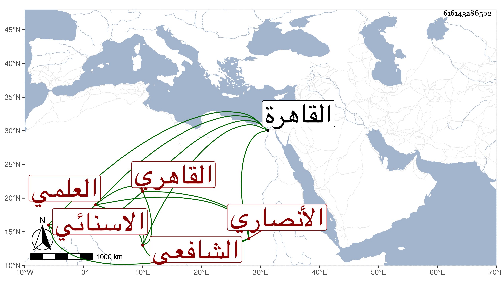

0902Sakhawi.DawLamic.ITO20230111-ara1.EIS1600.616143286502
Biography ID: 616143286502
155
عبد الرحمن بن أحمد بن سليمان الجلال بن الشهاب بن المحيوي أو العلمي الأنصاري الاسنائي ثم القاهري الشافعي والد البهاء أحمد الماضي ويعرف بابن العكم بفتح المهملة والكاف لقب لجده علم الدين حيث لم يكن ينطق به بعضهم الا بكاف بدل اللام . ولد في جمادى الآخرة سنة ست وثمانين وسبعمائة بالقاهرة ونشأ بها فحفظ القرآن وغيره واشتغل قليلا وسمع على التقى بن حاتم بعض السنن الكبرى للبيهقي وحدث بمسموعه بأخرة سمع منه الفضلاء أجاز لي وكذا قال لنا الزين رضوان انه سمع علي العسقلاني المقرئ الشاطبية وناب في القضاء ثم أقعد مدة وانقطع حتى مات في جمادى الأولى سنة ثمان وستين رحمه الله تعالى .
